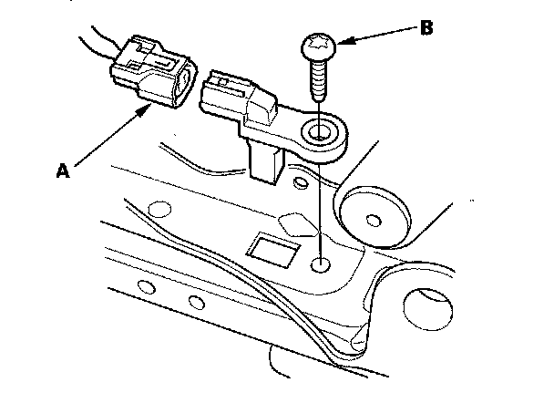
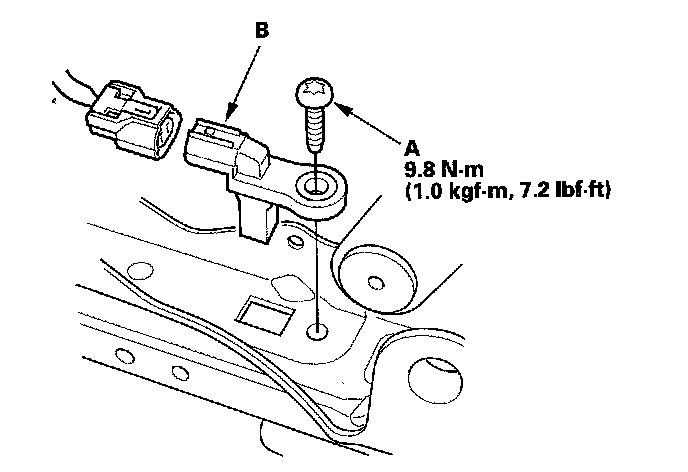

Driver's Seat Position Sensor Replacement
Driver's Seat Position Sensor ReplacementRemoval
NOTE:
- Removal of the driver's seat position sensor must be performed according to the SRS precautions/procedures.
- Do not turn the ignition switch ON (II), and do not connect the battery cable while removing the driver's seat position sensor.
1. Disconnect the negative cable from the battery, and wait at least 3 minutes before beginning work.
2. Disconnect the driver's airbag 4P connector.
3. Remove the driver's seat assembly.

4. Disconnect the floor wire harness or seat position sensor harness 2P connector (A) from the driver's seat position sensor.
5. Using a TORX T30 bit, remove the TORX bolt (B), then remove the driver's seat position sensor.
Installation
NOTE:
- Be sure to install the harness so it does not pinched or interfere with other parts.
- Do not turn the ignition switch ON (II), and do not connect the battery cable while installing the driver's seat position sensor.
- After installing the driver's seat position sensor, make sure it is clean. Keep it away from dust.

1. Install the new driver's seat position sensor with a TORX bolt (A), then connect the floor wire harness or seat position sensor harness 2P connector to the driver's seat position sensor (B).
2. Install the driver's seat assembly.
3. Reconnect the negative cable to the battery.
4. Check the operation of the driver's seat position sensor with the HDS.